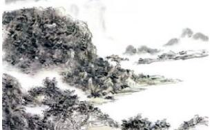

据史书记载，中国最早的水墨画产生于东晋（公元317——420年）时期。戴逵的《吴中溪山邑居图》、顾恺之的《雪霁堂五老峰图》是最早出现的水墨画。
顾、戴之后，水墨画进一步发展，并且出现了专门评论水墨画的论著。可见，水墨画在当时已经比较流行。其中宗炳和梁元帝为有名的水墨画评论家。
唐代（公元618——907年）是水墨画发展的鼎盛时期，出现了许多有名的大画家，如吴道子、李思训父子、王维等人。吴道子被后世称为画圣，他的水墨画一改前人细巧之积习，行笔纵放，如雷电交作，很有气势。李思训善画着色山水，他的儿子李昭道也是有名的水墨画家，师其父而有自己的风格，后世称他们父子的水墨画为大小李将军山水。王维襟怀高旷，迥超尘俗，首创渲淡画法。以水墨皴染之法而作破墨山水，以清淡闲逸为归。水墨画发展到唐代，出现了水墨画的南北两个画派。吴道子、李思训为北宗之祖，王维则为南宗之祖。
五代时期（公元前907——960年），水墨画进一步发展创新。这个时期有名的水墨画家有荆浩、关同、徐熙和黄筌。荆浩尤妙山水，善为云中山顶，四面峻厚，笔墨横溢。关同初师荆浩，刻苦钻研画道，中年之后，又学习王维的画法，自成一家。他喜作秋山寒林与村居野渡、幽人逸士、渔市山驿。他的画讲究用笔，笔愈简而气愈壮，景愈少而意愈长。徐熙善画花果、草虫。他的画“落墨以写其枝叶蕊萼，然后傅色，故骨气风神为古今绝笔。”黄筌善画禽鸟、山水，成一家之法。他画的花鸟，先以墨笔勾勒后傅以彩色，浓丽精工，称为双勾体。从徐、黄两个人的画来看，徐熙代表南宗，黄筌代表北宗。 民俗节庆网
宋代（公元960——1279年）水墨画家最有代表性的要数李成、范宽、董源、巨然四人。李成初师关同，后来也自成一家。后人评论他的画时说：“其画精通造化，扫千里于咫尺之间。山林泽薮平远寒林写于笔下，其妙入神，古今一人。”范宽、董源、巨然的画都有“不装巧趣，皆得天真”的特点。
元代（公元1271——1368年）水墨画家主要有黄公望、王蒙、吴镇和倪瓒四大家。黄公望则推为元季之冠，他师学董源、巨然，后来自成一家。他初居富春（今浙江富阳），领略江山自然之美。他总是随身带着纸笔，凡遇到美丽的景色就当场写生。后来移居虞山，使他有机会观赏虞山一年四季乃至每天早晚不同时间中虞山风光的变化。由于他师法自然，因此他的水墨画风光秀丽，变化万千。
明代（公元1368——1644年）水墨画分浙派、吴派和院派。浙派代表画家为戴进、蓝瑛，院派则以仇英、唐寅最有名气，吴派的画家主要有沈周、文征明等人。在浙派画家中，戴进当推第一，他的山水、道释、人物、花鸟、翎毛、走兽无所不工。沈周、文征明、董其昌、陈继儒被誉为吴门四大水墨画家。
清代（公元1644——1911年）水墨画家以四王为最著名。他们是王时敏、王原祁、王鉴和王荤。另外，佛门画家道济和八大山人也在水墨画坛享有很高的声誉。
水墨画梅
梅花构造 梅花花瓣圆润，呈圆形或椭圆形，寒冬在叶子发芽前开花，花瓣五片，有白﹑红、粉红等多种颜色。花瓣生长于子房周围，杯状构造，有许多花蕊。分享水墨画梅的基本画法。……
写意仙鹤
鹤在中国文化中有崇高的位置，特别是丹顶鹤，是长命、吉祥典雅的标志，常被与神仙联系起来，又称为仙鹤。鹤为长命仙禽，具有品格清高，听说，鹤寿无量，与龟相同被视为长命之王，后世常以鹤寿、鹤龄、鹤算作为祝寿……
《八骏图》
《八骏图》，徐悲鸿，年代不详，纵59.74厘米，横159.89厘米，纸本设色，藏处不详 在中国现代绘画史上，徐悲鸿的马独步画坛，无人能与之相颉颃。在他个人的艺术成就中，也以画马的成就最为卓著。他一生致力于国画的……
《江山万里图》
《江山万里图》，宋代，赵黻，纸本水墨，纵45.1厘米，横992.5厘米，北京故宫博物院藏 宋代赵黻巨幅长卷水墨山水画《江山万里图》第一段高清大图欣赏 宋代赵黻巨幅长卷水墨山水画《江山万里图》第二段高清大图欣赏 宋代赵黻巨幅长卷水墨山水画《江山万里图》第三段高清……

《仿范宽笔意》
《仿范宽笔意》，黄宾虹，纸本设色，纵174厘米，横94厘米，黄宾虹纪念馆藏 黄宾虹以自然为师，将宋、元画家的创造精神融入胸襟，取精用宏，行万里路，读万卷书，搜妙创真，达到了神化的境界。他曾有诗道：爱好溪山为写真，泼将水墨见精神。此幅《仿范宽笔意》近景为一……